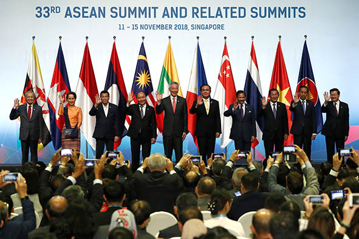
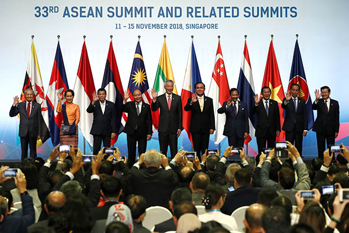

Selamat datang di website saya, perkenalkan nama saya Brainnie kelas IX-5 nomor absen 11. Pada kali ini, saya membuat website yang membahas mengenai SDGs (Sustainable Development Goals) dan kerja sama antar negara. Tujuan saya membuat website ini yaitu sebagai sarana edukasi dan inspirasi agar setiap orang, khususnya generasi muda dapat mulai berkontribusi melalui hal-hal kecil yang berdampak besar dan positif. Saya harap, website ini dapat menjadi tempat menambah ilmu, berbagi, dan motivasi untuk berkontribusi sehingga dapat menuju masa depan yang lebih baik dan berkelanjutan. ✨
SDGs adalah serangkaian 17 tujuan global yang dirancang untuk menciptakan dunia yang lebih adil, sejahtera, dan berkelanjutan. Mulai dari tanpa kemiskinan, tanpa kelaparan, pendidikan berkualitas, kesetaraan gender, hingga melindungi bumi. Semua tujuan ini dibuat agar negara-negara di seluruh dunia dapat bekerja sama untuk meningkatkan kualitas hidup manusia tanpa merusak bumi. Selain SDGs, website ini akan membahas bentuk-bentuk kerja sama antar negara, seperti kerja sama bilateral, regional, dan multilateral. Indonesia aktif berkolaborasi dengan negara-negara lain untuk mendukung tercapainya tujuan-tujuan tersebut. Dengan menjalani kerja sama bilateral dengan berbagai negara, kolaborasi regional seperti di ASEAN, serta berpartisipasi dalam organisasi global seperti PBB, Indonesia terus berkontribusi dalam upaya mencapai masa depan yang berkelanjutan. 🌍
Melalui website ini, saya ingin berbagi informasi dan inspirasi mengenai kondisi, dampak, potensi, peran masyarakat, tantangan, solusi, dan tindakan nyata yang dapat dilakukan untuk mendukung tercapainya SDGs dan masa depan yang berkelanjutan. Setiap langkah kecil dapat berdampak besar, maka mari kita sama-sama belajar dan memahami bagaimana setiap negara, termasuk peran kecil kita, dapat membawa perubahan besar bagi dunia. 🌏✨
Mari Mengenal 17 Tujuan SDGs!
Mengakhiri kemiskinan ekstrem dan memastikan setiap orang memiliki akses terhadap kebutuhan dasar seperti pangan, pendidikan, layanan kesehatan, dan tempat tinggal.
Menjamin semua orang mendapat pangan cukup dan bergizi, serta meningkatkan ketahanan sistem pertanian.
Meningkatkan kesehatan masyarakat melalui layanan kesehatan yang terjangkau dan pencegahan penyakit.
Memberikan akses pendidikan yang merata dan berkualitas bagi semua anak dan orang dewasa.

Menjamin hak dan kesempatan yang sama bagi perempuan dan laki-laki dalam berbagai aspek kehidupan.
Menyediakan akses air minum aman dan fasilitas sanitasi yang layak bagi semua orang.
Menyediakan energi yang andal, terjangkau, dan ramah lingkungan.
Menciptakan lapangan kerja yang layak dan mendorong pertumbuhan ekonomi yang inklusif.
Mengembangkan infrastruktur dan teknologi yang modern untuk mendukung pembangunan.
Mengurangi ketimpangan pendapatan dan kesempatan antar kelompok masyarakat.
Membangun kota yang aman, nyaman, dan ramah lingkungan.
Mendorong penggunaan sumber daya secara bijak dan mengurangi limbah.
Mengambil tindakan untuk mengatasi dampak perubahan iklim secara global.
Melindungi laut dan sumber daya yang ada di dalamnya.
Menjaga hutan, tanah, dan keanekaragaman hayati di darat.
Mendorong masyarakat yang damai dan memperkuat sistem hukum serta pemerintahan.
Menguatkan kerja sama antar negara dan lembaga untuk mewujudkan seluruh tujuan SDGs.